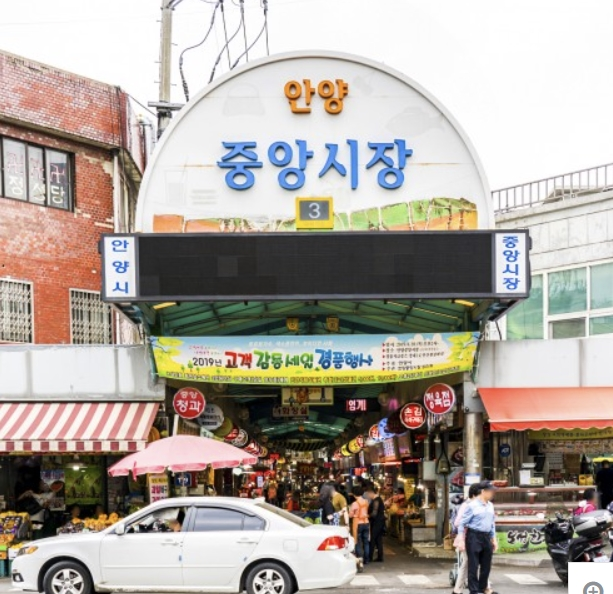

안양의 소개와 교육의 변화를 알려드려요
안양은 살기좋은 대한민국의 중심 경기도에 위치한 도시로, 오랜 역사와 문화를 자랑합니다. 이 도시는 현대적인 개발과 자연의 아름다움이 잘 조화된 곳입니다. 좋은 환경과 함께 교육에서의 적극적인 지원도 돋보이는 도시로 인공지능 시대에 맞추어 학생들의 역량을 키우는 외부 전문가 수업 활동이 최근 이슈입니다.
주요 변화
- 안양의 주요 교육변화 내용
- 2025년부터 인공지능 기술을 적용한 ‘AI 디지털교과서’ 도입
- 수학, 영어, 정보 교과 우선 도입 확정
- 교사(사람)와 AI보조교사(디지털교과서)가 협력하여 학생 맞춤 수업 제공
- 인공지능 기술을 활용하며 인간적으로 지도하는 선도교사 집중 육성
- 2023년 7개 교육청에서 300개 디지털 선도학교 운영 예정
- 안양의 멋진 환경인 중앙공원: 도심 속에서 휴식을 취할 수 있는 큰 공원입니다.
- 평촌 중앙공원: 가족 단위 방문객들에게 인기가 많은 곳입니다.
안양의 모습
자랑스런 인덕원고
